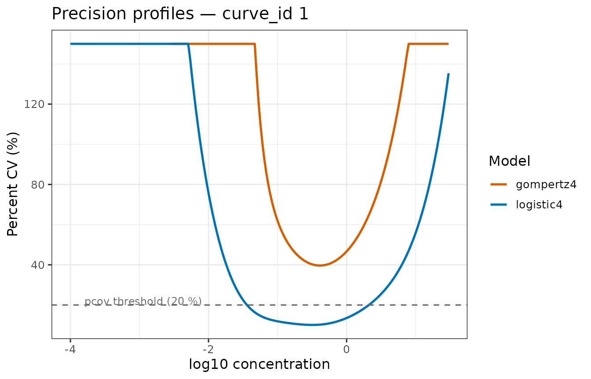
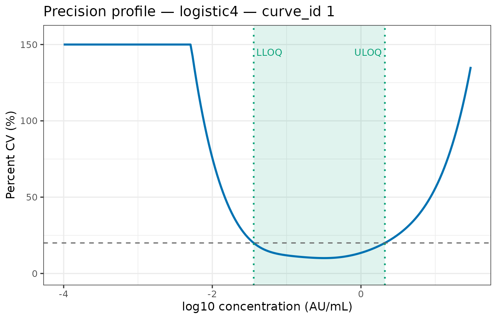
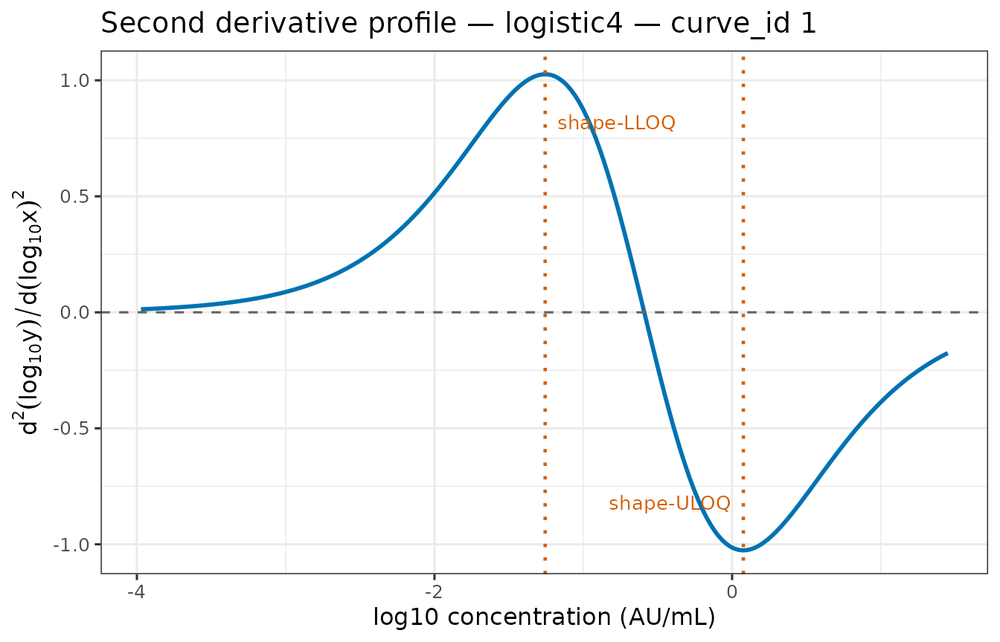
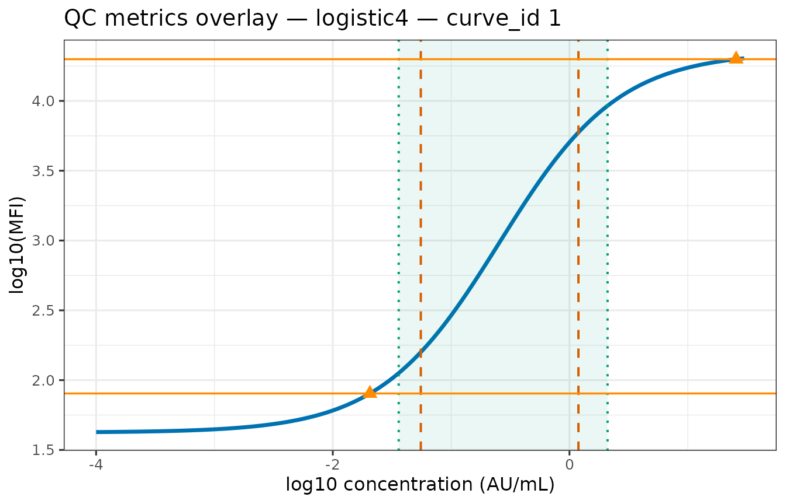
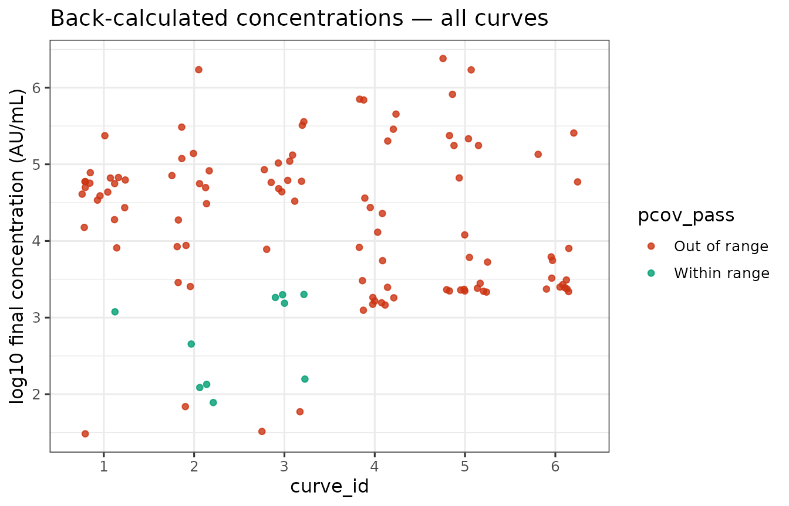

Frequentist Calibration Curves with curveRfreq
Source:vignettes/frequentist-quickstart.Rmd
frequentist-quickstart.RmdEcosystem orientation
The curveR ecosystem consists of three packages that share a common data contract defined by curveRcore:
-
curveRcore — preprocessing pipelines, forward model
functions, inverse back-calculation functions, analytical gradients, the
calibration_resultS3 class, and eligibility-gating logic shared across fitting engines. -
curveRfreq (this package) — frequentist
nonlinear least-squares (NLS) calibration via
fit_calibration_freq()and its multi-curve wrapperfit_calibration_freq_multiplate(). -
curveRbayes — Bayesian calibration via Stan;
produces the same
calibration_resultobject so downstream code is engine-agnostic.
If you need a full frequentist-vs-Bayesian comparison, including
LOO-CV model selection and posterior predictive checks, see the hub
vignette vignette("curveR-ecosystem-overview"). This
vignette covers curveRfreq alone, from raw assay data
to calibrated concentrations with per-sample precision.
Data loading and preprocessing
The bead_assay_example dataset
curveRfreq ships a synthetic multi-plate bead-based immunoassay dataset that mirrors the structure expected by the fitting pipeline.
library(curveRfreq) # also attaches curveRcore
library(ggplot2)
# Supplying package = "curveRfreq" makes data() work whether the package
# is fully installed, loaded via pkgload::load_all(), or being built by
# pkgdown — in all cases R knows exactly which data/ folder to search.
data(bead_assay_example, package = "curveRfreq")
# Top-level structure
str(bead_assay_example, max.level = 1)
#> List of 6
#> $ standards :'data.frame': 60 obs. of 8 variables:
#> $ blanks :'data.frame': 24 obs. of 7 variables:
#> $ samples :'data.frame': 120 obs. of 13 variables:
#> $ curve_id_lookup:'data.frame': 6 obs. of 5 variables:
#> $ response_var : chr "mfi"
#> $ indep_var : chr "concentration"The list contains six elements:
| Element | Description |
|---|---|
standards |
60 rows × 8 cols. One row per standard well. |
blanks |
24 rows × 7 cols. Four blank wells per plate. |
samples |
120 rows × 13 cols. Patient samples at dilution 1:2000. |
curve_id_lookup |
6 rows × 5 cols. Maps integer curve_id to antigen /
plate metadata. |
response_var |
"mfi" — name of the response column. |
indep_var |
"concentration" — name of the independent variable
column. |
The dataset spans two antigens (alpha
and beta) × three replicate plates each,
giving six curve_id values (1–6). The alpha
curves were simulated with a Gompertz model; the beta
curves with a 5PL model, reflecting realistic between-antigen variation
in curve shape.
head(bead_assay_example$standards)
#> curve_id stype sampleid well dilution mfi assay_response_variable
#> 1 1 S STD_01 A1 1000.000000 109.4 mfi
#> 2 1 S STD_02 B1 333.333333 316.9 mfi
#> 3 1 S STD_03 C1 100.000000 1133.0 mfi
#> 4 1 S STD_04 D1 33.333333 4156.1 mfi
#> 5 1 S STD_05 E1 10.000000 12458.1 mfi
#> 6 1 S STD_06 F1 3.333333 18933.4 mfi
#> assay_independent_variable
#> 1 concentration
#> 2 concentration
#> 3 concentration
#> 4 concentration
#> 5 concentration
#> 6 concentration
bead_assay_example$curve_id_lookup
#> curve_id antigen study_accession experiment_accession plate
#> 1 1 alpha SDYexample EXPexample plate_1
#> 2 2 alpha SDYexample EXPexample plate_2
#> 3 3 alpha SDYexample EXPexample plate_3
#> 4 4 beta SDYexample EXPexample plate_1
#> 5 5 beta SDYexample EXPexample plate_2
#> 6 6 beta SDYexample EXPexample plate_3Preprocessing with
curveRcore::preprocess_standards()
curveRfreq does not preprocess data. All transforms
— concentration computation, prozone correction, blank handling, and
log10 transforms — must be applied upstream via
curveRcore::preprocess_standards() (or its component
functions). This clean separation means both curveRfreq and curveRbayes
receive data on the identical fitting scale, making results directly
comparable.
preprocess_standards() applies these steps in order:
-
compute_concentration()— converts thedilutioncolumn to absolute concentration using the known undiluted standard concentration, optionally log10-transforming the result. -
correct_prozone()— dampens the hook (prozone) effect at high concentrations by compressing post-peak signal toward the peak. -
perform_blank_operation()— applies one of five blank strategies:"ignored"(default),"included"(append as extra point),"subtracted","subtracted_3x", or"subtracted_10x". -
compute_log_response()— applieslog10()to the response. Values ≤ 0 are floored to 1 % of the minimum positive value before transformation.
For the bead assay example, the undiluted standard concentration is
30 AU/mL (the highest point in the dilution series stored as
dilution = 1/CONC):
std_raw <- bead_assay_example$standards
blank_raw <- bead_assay_example$blanks
# Preprocess one curve at a time, then stack
std_preprocessed <- do.call(rbind, lapply(
split(std_raw, std_raw$curve_id),
function(df) {
cid <- df$curve_id[1]
blanks_for_curve <- blank_raw[blank_raw$curve_id == cid, ]
result <- curveRcore::preprocess_standards(
data = df,
antigen_settings = list(standard_curve_concentration = 30),
response_variable = "mfi",
independent_variable = "concentration",
is_log_response = TRUE,
blank_data = blanks_for_curve,
blank_option = "subtracted",
is_log_independent = TRUE,
apply_prozone = TRUE
)
result$data
}
))
# Both response and concentration are now on the log10 scale
head(std_preprocessed[, c("curve_id", "concentration", "mfi")])
#> curve_id concentration mfi
#> 1.1 1 -1.52287875 1.964654
#> 1.2 1 -1.04575749 2.476663
#> 1.3 1 -0.52287875 3.047580
#> 1.4 1 -0.04575749 3.616883
#> 1.5 1 0.47712125 4.094851
#> 1.6 1 0.95424251 4.276834Key contract: After
preprocess_standards(), the column namedconcentrationholds log10-transformed concentration, and the response column (mfihere) holds log10-transformed MFI. These are the scales thatfit_calibration_freq_multiplate()expects.
Fitting all curves with
fit_calibration_freq_multiplate()
Function signature and argument reference
fit_calibration_freq_multiplate() is the recommended
entry point. It splits the stacked preprocessed data by
curve_id, calls fit_calibration_freq() for
each, collects results into a calibration_result_multiplate
object, and handles per-curve errors gracefully.
# , cache = TRUE
# Samples stay on the RAW response scale — log-transform is applied
# internally during back-calculation.
# Note: pcov_threshold, min_dynamic_range_log10, max_rel_se, and bound_tol
# are parameters of fit_calibration_freq() only; the multiplate wrapper
# uses the single-curve defaults (20, 0.5, 5.0, 1e-4) for every curve.
samples_raw <- bead_assay_example$samples
mp <- fit_calibration_freq_multiplate(
standards = std_preprocessed,
blanks = blank_raw,
samples = samples_raw,
response_var = "mfi",
model_names = c("logistic4", "gompertz4"),
is_log_response = TRUE, # response was log10-transformed in preprocessing
is_log_independent = TRUE, # concentration is on the log10 scale
std_curve_conc = 30, # undiluted standard concentration, raw scale
fixed_a = NULL, # estimate lower asymptote freely
cv_x_max = 150, # cap pcov at 150 %
n_grid = 200L, # grid resolution
grid_min_conc = 1e-4, # grid lower bound, raw scale
grid_max_conc = NULL, # NULL → uses std_curve_conc
on_error = "stop", # DIAGNOSTIC: show actual error
verbose = TRUE # DIAGNOSTIC: show fitting details
)
#> [1/6] curve_id=1
#> [constraints] scale=high, dr=2.356, slope=[0.100,2.000], g=[0.50,5.00]
#>
#> Trying model: logistic4
#> ✓ logistic4 converged (AIC=-27.76)
#>
#> Trying model: gompertz4
#> ✓ gompertz4 converged (AIC=-10.72)
#> [eligibility] logistic4 ✓ eligible
#> [eligibility] gompertz4 ✗ ineligible
#> gate at_bound a at upper bound
#> gate dynamic_range dynamic range = 0 log10 (need >= 0.5)
#> [selection] best = logistic4
#> Waiting for profiling to be done...
#> [detection_limits] curve_id=1 LLOD_resp=1.904 ULOD_resp=4.299 MDC=[-1.686, 1.408] RDL=[-1.676, 1.058]
#> [2/6] curve_id=2
#> [constraints] scale=high, dr=2.547, slope=[0.100,2.000], g=[0.50,5.00]
#>
#> Trying model: logistic4
#> ✓ logistic4 converged (AIC=-19.17)
#>
#> Trying model: gompertz4
#> ✓ gompertz4 converged (AIC=-16.12)
#> [eligibility] logistic4 ✓ eligible
#> [eligibility] gompertz4 ✗ ineligible
#> gate dynamic_range dynamic range = 0 log10 (need >= 0.5)
#> [selection] best = logistic4
#> Waiting for profiling to be done...
#> [warning] NaNs produced
#> [detection_limits] curve_id=2 LLOD_resp=1.791 ULOD_resp=4.237 MDC=[-1.513, 1.337] RDL=[-1.493, 0.9289]
#> [3/6] curve_id=3
#> [constraints] scale=high, dr=2.381, slope=[0.100,2.000], g=[0.50,5.00]
#>
#> Trying model: logistic4
#> ✓ logistic4 converged (AIC=-24.74)
#>
#> Trying model: gompertz4
#> ✓ gompertz4 converged (AIC=-19.38)
#> [eligibility] logistic4 ✓ eligible
#> [eligibility] gompertz4 ✗ ineligible
#> gate dynamic_range dynamic range = 0 log10 (need >= 0.5)
#> [selection] best = logistic4
#> Waiting for profiling to be done...
#> [detection_limits] curve_id=3 LLOD_resp=1.912 ULOD_resp=4.3 MDC=[-1.624, 1.285] RDL=[-1.611, 0.9333]
#> [4/6] curve_id=4
#> [constraints] scale=high, dr=4.483, slope=[0.100,2.000], g=[0.50,5.00]
#>
#> Trying model: logistic4
#> ✓ logistic4 converged (AIC=-4.17)
#>
#> Trying model: gompertz4
#> ✓ gompertz4 converged (AIC=-1.58)
#> [eligibility] logistic4 ✗ ineligible
#> gate dynamic_range dynamic range = 0 log10 (need >= 0.5)
#> [eligibility] gompertz4 ✗ ineligible
#> gate rel_se c: rel_se=44.29
#> gate dynamic_range dynamic range = 0 log10 (need >= 0.5)
#> [selection] best = logistic4 [fallback]
#> Waiting for profiling to be done...
#> [detection_limits] curve_id=4 LLOD_resp=0.133 ULOD_resp=4.338 MDC=[-1.158, 2.04] RDL=[-1.12, 1.608]
#> [5/6] curve_id=5
#> [constraints] scale=high, dr=4.422, slope=[0.100,2.000], g=[0.50,5.00]
#>
#> Trying model: logistic4
#> ✓ logistic4 converged (AIC=4.28)
#>
#> Trying model: gompertz4
#> ✓ gompertz4 converged (AIC=-0.62)
#> [eligibility] logistic4 ✗ ineligible
#> gate dynamic_range dynamic range = 0 log10 (need >= 0.5)
#> [eligibility] gompertz4 ✗ ineligible
#> gate dynamic_range dynamic range = 0 log10 (need >= 0.5)
#> [selection] best = gompertz4 [fallback]
#> Waiting for profiling to be done...
#> [detection_limits] curve_id=5 LLOD_resp=0.190 ULOD_resp=4.229 MDC=[-0.5996, 1.928] RDL=[-0.5841, 1.485]
#> [6/6] curve_id=6
#> [constraints] scale=high, dr=4.444, slope=[0.100,2.000], g=[0.50,5.00]
#>
#> Trying model: logistic4
#> ✓ logistic4 converged (AIC=18.69)
#>
#> Trying model: gompertz4
#> ✓ gompertz4 converged (AIC=16.92)
#> [eligibility] logistic4 ✗ ineligible
#> gate at_bound a at upper bound
#> gate dynamic_range dynamic range = 0 log10 (need >= 0.5)
#> [eligibility] gompertz4 ✗ ineligible
#> gate at_bound a at upper bound; b at upper bound
#> gate dynamic_range dynamic range = 0 log10 (need >= 0.5)
#> [selection] best = gompertz4 [fallback]
#> Waiting for profiling to be done...
#> [warning] NaNs produced
#> [warning] NaNs produced
#> [warning] NaNs produced
#> [warning] NaNs produced
#> [warning] NaNs produced
#> [warning] NaNs produced
#> [detection_limits] curve_id=6 LLOD_resp=0.992 ULOD_resp=3.815 MDC=[-0.1745, 1.098] RDL=[-0.1337, 0.7864]Argument reference
| Argument | Type | Default | Meaning |
|---|---|---|---|
standards |
data frame | — |
Required. Stacked preprocessed standards with
curve_id, concentration, and the response
column. |
blanks |
data frame | — |
Required. Stacked blank data with
curve_id and the response column, on the same fitting scale
as standards. Stored in result$blanks for QA
and plotting. Every curve_id in standards
should have a corresponding entry. |
samples |
data frame or NULL | NULL |
Stacked sample data on the raw (untransformed)
response scale. The dilution column is used to recover
pre-dilution concentration. |
response_var |
character | — | Required. Name of the response column. Must match what preprocessing produced. |
model_names |
character vector | c("logistic4", "gompertz4") |
Which nonlinear models to fit. Any subset of
curveRcore::available_models() is valid.
"loglogistic4" is silently dropped when
is_log_independent = TRUE because it is algebraically
redundant with "logistic4" on the log scale. |
is_log_response |
logical | TRUE |
Was the response log10-transformed during preprocessing? Must match the preprocessing step. |
is_log_independent |
logical | TRUE |
Was concentration log10-transformed? Must match the preprocessing step. |
std_curve_conc |
numeric | — | Required. The undiluted standard concentration on the raw scale (e.g. 30 AU/mL). Used to generate the prediction grid. |
fixed_a |
numeric or NULL | NULL |
If non-NULL, pins the lower asymptote a to this value
(on the fitting scale, i.e. already log10-transformed
if is_log_response = TRUE). When NULL, a is
freely estimated. Fixing a is most useful when blank wells
reliably define the lower asymptote. |
cv_x_max |
numeric | 150 | Hard cap on the percent coefficient of variation (%CV) of
back-calculated concentration. Values above this threshold are set to
cv_x_max in $pcov and
$pcov_rmse. |
n_grid |
integer | 200 | Number of evenly spaced log10-concentration points on the prediction grid. |
grid_min_conc |
numeric | 1e-4 | Lower end of the prediction grid, raw scale. |
grid_max_conc |
numeric or NULL | NULL |
Upper end of the prediction grid, raw scale. NULL uses
std_curve_conc. |
curve_ids |
vector or NULL | NULL |
Subset of curve_id values to fit. NULL fits all curves
found in standards. |
on_error |
"warn" or "stop"
|
"warn" |
Error handling per curve. "warn" stores NULL for the
failed curve and continues; "stop" raises immediately. |
verbose |
logical | FALSE |
Emit per-model convergence messages and eligibility gate results. |
Note: pcov_threshold (default 20), min_dynamic_range_log10 (default 0.5), max_rel_se (default 5.0), and bound_tol (default 1e-4) are parameters of fit_calibration_freq() and are not exposed by the multiplate wrapper — the single-curve defaults are used for every curve. To override them, call fit_calibration_freq() directly for individual curves. —
The multi-start NLS algorithm and constraint system
Understanding the fitting engine helps interpret convergence failures and tune the algorithm for unusual assay configurations.
Adaptive parameter bounds
Before any fitting, compute_model_constraints() calls
curveRcore::adaptive_constraint_profile(), which inspects
the preprocessed response range and classifies the assay into one of
three scale classes:
| Scale class | Criterion (log response) | Typical assay |
|---|---|---|
"high" |
log10(MFI) max > 2.5 | Luminex / bead-based |
"medium" |
log10(MFI) max > 0.5 | Mid-range ELISA |
"low" |
log10(MFI) max ≤ 0.5 | Absorbance / OD |
The scale class drives the width of parameter bounds, which differ systematically:
| Parameter | Role |
"high" bounds |
"low" bounds |
|---|---|---|---|
a |
Lower asymptote | [y_min − 0.5·dr, y_min + 0.1·dr] |
same formula, narrower dr |
b |
Slope / steepness | [0.1, 2.0] |
[0.01, 5.0] — wider to avoid singular Jacobians |
c |
Inflection point | ±0.5 × conc range | ±1.0 × conc range |
d |
Upper asymptote |
[y_min + 0.5·dr − margin, y_max + margin] where margin
= 0.5·dr |
margin = 0.15·dr |
g |
Asymmetry (5PL) | [0.5, 5.0] |
[0.1, 10.0] |
The bound on a is only computed when
fixed_a = NULL; otherwise a is not a free
parameter and no bounds are needed.
Multi-start Levenberg-Marquardt
fit_ensemble_nls() fits each model independently. For
each model it:
-
Generates starting values from
generate_start_lists(). Candidate starts are evenly spaced across the parameter bounds:- 3 starts for
"high"and"medium"scale data. - 5 starts for
"low"scale data, with the slopebbiased toward the lower end of its range (squared fractional spacing) to avoid overshooting the flat portion of low-signal curves.
- 3 starts for
Runs
minpack.lm::nlsLM()for each start, keeping the fit with the lowest AIC. Tighter tolerances (ftol = ptol = 1e-8,maxiter = 200) are used for low-signal data.-
Falls back if all primary starts fail and the scale class is
"low":-
Fallback 1 — relaxes bounds by 50 % in each direction and
retries
nlsLMfrom the midpoint. -
Fallback 2 — switches to
stats::nls()withalgorithm = "port"(box-constrained trust-region), which can converge where Levenberg-Marquardt does not.
-
Fallback 1 — relaxes bounds by 50 % in each direction and
retries
A model that exhausts all fallbacks is recorded with
converged = FALSE and is excluded from downstream
eligibility assessment and selection.
# Check convergence status for curve_id 1
cr1 <- mp$plates[["1"]]
convergence <- sapply(cr1$ensemble, function(e) {
c(model = e$model_name, converged = e$converged)
})
t(convergence)
#> model converged
#> logistic4 "logistic4" "TRUE"
#> gompertz4 "gompertz4" "TRUE"The eligibility-gated AIC model selection pipeline
Why eligibility gates matter
AIC and other information criteria measure forward-fit quality: how well the model predicts the response values in the training data. They are completely blind to whether the fitted model can back-calculate concentration reliably. A model whose asymptote estimate has hit a constraint boundary, or whose covariance matrix is nearly singular, can have a lower AIC than a better-identified competitor purely by overfitting.
The eligibility gates intercept such models before they can be selected. Only models that pass all applicable gates enter the AIC ranking.
The four gates
All four gates are evaluated per model using
curveRcore::assess_model_eligibility():
Gate 1 — at_bound
(Frequentist only; skipped when
constraints = NULL)
Checks that no parameter estimate lies within bound_tol
(default 1e-4) of its lower or upper constraint bound. A
boundary solution means the optimiser could not find an interior
minimum; AIC asymptotics do not hold at the boundary, and the resulting
parameter estimates are not maximum-likelihood estimates in the usual
sense.
Gate 2 — vcov_condition
(Frequentist only; skipped when vcov(fit)
fails)
Computes the condition number κ of vcov(fit). If κ ≥
1×10⁸, the covariance matrix is near-singular, making standard error
propagation unreliable. This gate catches cases where two parameters are
near-collinear — for example, when the inflection point c
lies far outside the data range.
Gate 3 — rel_se
(Both frequentist and Bayesian)
Checks that SE / |estimate| < max_rel_se (default
5.0) for every free parameter. A relative SE larger than the estimate
itself indicates an unidentified parameter — the data do not constrain
it. This gate uses std_error from the NLS summary
(frequentist) or sd from the posterior (Bayesian).
Gate 4 — dynamic_range
(Requires pcov_profile and
grid_x)
Evaluates the precision grid (see Section 7) to locate the LLOQ and
ULOQ — defined as the grid points where pcov crosses
pcov_threshold (default 20 %) at the lower and upper ends,
respectively. The gate passes if
ULOQ − LLOQ ≥ min_dynamic_range_log10 (default 0.5 log10
units, approximately 3-fold). A model with zero quantifiable range is
operationally useless even if it converged.
Selection logic
After assessment, curveRcore::select_best_eligible()
implements the following decision tree:
eligible_models ← {models that passed all gates}
if length(eligible_models) > 0:
best ← eligible_models ranked by AIC (lowest wins)
fallback ← FALSE
else: # fallback path
best ← model with widest dynamic_range_log10;
ties broken by AIC
fallback ← TRUE
fallback_reason ← per-model gate failure summaryThe fallback ensures that a result is always returned. When
fallback = TRUE the selection is a best-effort choice and
should be treated with caution.
Reading the selection audit trail
The $selection component of each
calibration_result contains the complete audit trail.
sel <- cr1$selection
# Was a fallback used?
sel$fallback
#> [1] FALSE
sel$fallback_reason # empty string when fallback = FALSE
#> [1] ""
# Which models passed all gates?
sel$eligible_models
#> [1] "logistic4"
# The winning model
sel$best_model_name
#> [1] "logistic4"
# AIC comparison table (always computed, even for ineligible models)
sel$weights
#> model_name converged aic delta_aic weight
#> 1 gompertz4 TRUE -10.72491 17.03944 0.0001994559
#> 2 logistic4 TRUE -27.76435 0.00000 0.9998005441Per-model gate results
Every model in the ensemble carries its own eligibility report inside
ensemble[[model]]$eligibility:
for (nm in names(cr1$ensemble)) {
elig <- cr1$ensemble[[nm]]$eligibility
cat(sprintf("\n── %s (eligible = %s) ──\n", nm, elig$eligible))
print(elig$gates)
cat(sprintf(
" LLOQ = %.3f ULOQ = %.3f DR = %.3f log10\n",
elig$lloq, elig$uloq, elig$dynamic_range_log10
))
}
#>
#> ── logistic4 (eligible = TRUE) ──
#> gate passed detail
#> 1 at_bound TRUE
#> 2 vcov_condition TRUE
#> 3 rel_se TRUE
#> 4 dynamic_range TRUE dynamic range = 1.76 log10
#> LLOQ = -1.443 ULOQ = 0.322 DR = 1.765 log10
#>
#> ── gompertz4 (eligible = FALSE) ──
#> gate passed detail
#> 1 at_bound FALSE a at upper bound
#> 2 vcov_condition TRUE
#> 3 rel_se TRUE
#> 4 dynamic_range FALSE dynamic range = 0 log10 (need >= 0.5)
#> LLOQ = NA ULOQ = NA DR = 0.000 log10The aic_best field
The selection object also exposes $aic_best, the model
name that would have been chosen by pure AIC (ignoring
eligibility gates). When aic_best != best_model_name, the
AIC winner was demoted by a gate failure — a useful diagnostic:
cat("AIC winner: ", sel$aic_best, "\n")
#> AIC winner: logistic4
cat("Eligibility winner: ", sel$best_model_name, "\n")
#> Eligibility winner: logistic4Per-model precision grids from
ensemble[[model]]$grid
Grid computation — every converged model, not just the best
A critical design point: precision grids are computed for
every converged model, not only the one ultimately selected.
This happens in step 6a of fit_calibration_freq(), before
eligibility assessment:
# Conceptually (internal to fit_calibration_freq):
ensemble_grids <- lapply(names(ensemble_raw), function(nm) {
if (!ensemble_raw[[nm]]$converged) return(NULL)
predict_grid_freq(grid = base_grid, fit = ensemble_raw[[nm]]$fit, ...)
})The per-model grids are what feed the dynamic_range
gate. After fitting, each grid is attached to its ensemble entry as
ensemble[[model]]$grid. The top-level $grid
slot of the calibration_result is simply a pointer to the
best-model grid — no recomputation occurs.
Grid columns
grid_best <- cr1$grid
names(grid_best)
#> [1] "log10_concentration" "concentration"
#> [3] "x_fit" "predicted_response"
#> [5] "ci_lower" "ci_upper"
#> [7] "predicted_concentration" "se_concentration"
#> [9] "pcov" "pcov_rmse"
#> [11] "pcov_pass" "d2y_dx2"| Column | Description |
|---|---|
x_fit |
Grid point on the fitting scale (log10 concentration, if
is_log_independent = TRUE). |
log10_concentration |
Same as x_fit when
is_log_independent = TRUE. |
predicted_response |
Forward model prediction: ŷ = f(x, θ̂). On the fitting
(log10) scale. |
ci_lower, ci_upper
|
Delta-method 95 % CI on the response scale. |
predicted_concentration |
Back-calculated concentration from ŷ. On the fitting
scale. |
se_concentration |
Delta-method SE of the back-calculated concentration. |
pcov |
Percent CV of back-calculated concentration (%). Capped at
cv_x_max. |
pcov_rmse |
Relative RMSE (%) — includes bias of
predicted_concentration vs x_fit. |
pcov_pass |
Logical. TRUE when pcov < cv_x_max and
pcov is finite. |
The pcov formula
For a log10-scale independent variable, pcov is computed
from the delta-method SE on the log10 scale:
where
and
is summary(fit)$sigma (residual SE of the response on the
fitting scale). The first term captures parameter
uncertainty (propagated through the inverse function via
curveRcore::make_inv_and_grad_fixed()), and the second
captures observation-level noise.
Comparing grids across models
Because every converged model has a grid, you can compare precision profiles side by side — even for the non-selected model:
library(ggplot2)
grid_list <- lapply(names(cr1$ensemble), function(nm) {
g <- cr1$ensemble[[nm]]$grid
if (is.null(g) || !"x_fit" %in% names(g)) return(NULL)
g <- as.data.frame(g) # explicit copy — prevents mutation of cr1$grid
g$model <- nm
g
})
grid_compare <- do.call(rbind, Filter(Negate(is.null), grid_list))
if (!is.null(grid_compare) && "x_fit" %in% names(grid_compare)) {
ggplot(grid_compare,
aes(x = x_fit, y = pcov, colour = model)) +
geom_line(linewidth = 0.9) +
geom_hline(yintercept = 20, linetype = "dashed", colour = "grey40") +
annotate("text", x = -3.8, y = 22, label = "pcov threshold (20 %)",
hjust = 0, size = 3.2, colour = "grey40") +
scale_colour_manual(values = c(logistic4 = "#0072B2", gompertz4 = "#D55E00")) +
labs(x = "log10 concentration", y = "Percent CV (%)",
title = "Precision profiles — curve_id 1",
colour = "Model") +
theme_bw(base_size = 12)
} else {
message("Skipping compare-grids plot: x_fit not available in ensemble grids.")
}
#> Warning: Removed 53 rows containing missing values or values outside the scale range
#> (`geom_line()`).
Precision profiles for both candidate models on curve_id 1.
Dynamic range, LLOQ, and ULOQ
Reading LOQ values from the eligibility report
The LLOQ and ULOQ (on the log10 concentration scale) are stored
inside ensemble[[model]]$eligibility:
elig_best <- cr1$ensemble[[sel$best_model_name]]$eligibility
lloq_log10 <- elig_best$lloq
uloq_log10 <- elig_best$uloq
dr_log10 <- elig_best$dynamic_range_log10
cat(sprintf("LLOQ = %.3f log10 (%.4f AU/mL)\n", lloq_log10, 10^lloq_log10))
#> LLOQ = -1.443 log10 (0.0361 AU/mL)
cat(sprintf("ULOQ = %.3f log10 (%.3f AU/mL)\n", uloq_log10, 10^uloq_log10))
#> ULOQ = 0.322 log10 (2.098 AU/mL)
cat(sprintf("Dynamic range = %.3f log10 units (%.1f-fold)\n",
dr_log10, 10^dr_log10))
#> Dynamic range = 1.765 log10 units (58.2-fold)Visualising the quantifiable range
# Build a fresh plain data frame to avoid any reference or class issues
g_best <- data.frame(
x_fit = cr1$grid[["x_fit"]],
pcov = cr1$grid[["pcov"]]
)
ggplot(g_best, aes(x = x_fit, y = pcov)) +
annotate("rect",
xmin = lloq_log10, xmax = uloq_log10,
ymin = -Inf, ymax = Inf,
fill = "#009E73", alpha = 0.12) +
geom_line(colour = "#0072B2", linewidth = 1) +
geom_hline(yintercept = 20, linetype = "dashed", colour = "grey40") +
geom_vline(xintercept = c(lloq_log10, uloq_log10),
linetype = "dotted", colour = "#009E73", linewidth = 0.8) +
annotate("text", x = lloq_log10, y = 145, label = "LLOQ",
hjust = -0.1, size = 3.5, colour = "#009E73") +
annotate("text", x = uloq_log10, y = 145, label = "ULOQ",
hjust = 1.1, size = 3.5, colour = "#009E73") +
coord_cartesian(ylim = c(0, 155)) +
labs(x = "log10 concentration (AU/mL)",
y = "Percent CV (%)",
title = paste("Precision profile —", sel$best_model_name,
"— curve_id 1")) +
theme_bw(base_size = 12)
Precision profile with LLOQ and ULOQ indicated. The shaded region is the quantifiable range.
Interpretation: Any sample whose back-calculated concentration falls between LLOQ and ULOQ (shaded region) has a back-calculation %CV ≤ 20 %. Samples outside this range should be flagged or re-measured at a different dilution.
Detection limits, shape-LOQ, and the second derivative profile
Second derivative and curvature-based LOQ
In addition to the precision-profile-based LLOQ/ULOQ (derived from
pcov threshold crossings), every per-model grid now
includes a d2y_dx2 column: the second derivative
,
computed from the existing grid points with zero additional model
evaluations.
The second derivative of a monotone increasing sigmoid has a peak below the inflection point, a zero crossing at the inflection point, and a valley above it. The shape-LLOQ (peak) and shape-ULOQ (valley) bracket the quasi-linear region of maximum assay sensitivity.
These are stored in ensemble[[model]]$eligibility as
shape_lloq_log10, shape_uloq_log10, and their
natural-scale and response-scale counterparts.
best_grid <- as.data.frame(cr1$ensemble[[sel$best_model_name]]$grid)
best_elig <- cr1$ensemble[[sel$best_model_name]]$eligibility
if ("d2y_dx2" %in% names(best_grid)) {
ok <- is.finite(best_grid$d2y_dx2)
ggplot(best_grid[ok, ],
aes(x = x_fit, y = d2y_dx2)) +
geom_line(colour = "#0072B2", linewidth = 1) +
geom_hline(yintercept = 0, linetype = "dashed", colour = "grey40") +
{if (is.finite(best_elig$shape_lloq_log10))
geom_vline(xintercept = best_elig$shape_lloq_log10,
linetype = "dotted", colour = "#D55E00", linewidth = 0.8)} +
{if (is.finite(best_elig$shape_uloq_log10))
geom_vline(xintercept = best_elig$shape_uloq_log10,
linetype = "dotted", colour = "#D55E00", linewidth = 0.8)} +
{if (is.finite(best_elig$shape_lloq_log10))
annotate("text", x = best_elig$shape_lloq_log10, y = max(best_grid$d2y_dx2[ok]) * 0.8,
label = "shape-LLOQ", hjust = -0.1, colour = "#D55E00", size = 3.5)} +
{if (is.finite(best_elig$shape_uloq_log10))
annotate("text", x = best_elig$shape_uloq_log10, y = min(best_grid$d2y_dx2[ok]) * 0.8,
label = "shape-ULOQ", hjust = 1.1, colour = "#D55E00", size = 3.5)} +
labs(x = "log10 concentration (AU/mL)",
y = expression(d^2*(log[10]*y) / d*(log[10]*x)^2),
title = paste("Second derivative profile —", sel$best_model_name, "— curve_id 1")) +
theme_bw(base_size = 12)
}
Second derivative profile for the best eligible model (curve_id 1). The peak marks the shape-LLOQ and the valley marks the shape-ULOQ.
Comparing shape-LOQ with pcov-LOQ
shape_vs_pcov <- data.frame(
Metric = c("Shape-LLOQ", "Shape-ULOQ", "pcov-LLOQ", "pcov-ULOQ"),
log10_conc = c(best_elig$shape_lloq_log10, best_elig$shape_uloq_log10,
best_elig$lloq, best_elig$uloq),
stringsAsFactors = FALSE
)
shape_vs_pcov$conc_AU_mL <- 10^shape_vs_pcov$log10_conc
knitr::kable(shape_vs_pcov, digits = 3,
caption = paste("Shape-LOQ vs pcov-LOQ for", sel$best_model_name, "(curve_id 1)"))| Metric | log10_conc | conc_AU_mL |
|---|---|---|
| Shape-LLOQ | -1.256 | 0.055 |
| Shape-ULOQ | 0.076 | 1.190 |
| pcov-LLOQ | -1.443 | 0.036 |
| pcov-ULOQ | 0.322 | 2.098 |
The shape-LOQ is purely geometric (depends only on curve shape), while the pcov-LOQ incorporates measurement uncertainty. The shape-LOQ typically provides a tighter range.
CI-based detection limits: LOD, MDC, and RDL
The $detection_limits element of each
calibration_result contains three families of metrics
computed from parameter confidence intervals:
-
LODs (Limits of Detection): the upper 97.5% CI of
a(lower LOD) and the lower 2.5% CI ofd(upper LOD), mapped to both the response and concentration scales. - MDC (Minimum Detectable Concentration): the LOD response values inverted through the point-estimate curve.
-
RDL (Reliable Detection Limits): LOD response
values inverted through CI-modified curves (conservative = compressed
d; liberal = expandedd).
dl <- cr1$detection_limits
if (!is.null(dl)) {
dl_summary <- data.frame(
Metric = c("Lower LOD", "Upper LOD",
"MDC (lower)", "MDC (upper)",
"RDL (lower, conservative)", "RDL (upper, liberal)"),
Response = c(dl$lods$lower_lod_response,
dl$lods$upper_lod_response,
NA, NA, NA, NA),
log10_conc = c(dl$lods$lower_lod_log10_conc,
dl$lods$upper_lod_log10_conc,
dl$mdc_rdl$mdc_lower_log10,
dl$mdc_rdl$mdc_upper_log10,
dl$mdc_rdl$rdl_lower_log10,
dl$mdc_rdl$rdl_upper_log10),
conc_AU_mL = c(dl$lods$lower_lod_conc,
dl$lods$upper_lod_conc,
dl$mdc_rdl$mdc_lower_conc,
dl$mdc_rdl$mdc_upper_conc,
dl$mdc_rdl$rdl_lower_conc,
dl$mdc_rdl$rdl_upper_conc),
stringsAsFactors = FALSE
)
knitr::kable(dl_summary, digits = 4,
caption = paste("Detection limits for", dl$model_name,
"(curve_id 1, alpha =", dl$alpha, ")"))
}| Metric | Response | log10_conc | conc_AU_mL |
|---|---|---|---|
| Lower LOD | 1.9045 | -1.6864 | 0.0206 |
| Upper LOD | 4.2989 | 1.4084 | 25.6093 |
| MDC (lower) | NA | -1.6864 | 0.0206 |
| MDC (upper) | NA | 1.4084 | 25.6093 |
| RDL (lower, conservative) | NA | -1.6757 | 0.0211 |
| RDL (upper, liberal) | NA | 1.0580 | 11.4301 |
All QC limits on one plot
g <- as.data.frame(cr1$grid)
dl <- cr1$detection_limits
p <- ggplot(g, aes(x = x_fit, y = predicted_response)) +
geom_line(colour = "#0072B2", linewidth = 1.2)
# pcov-LOQ shaded region
if (is.finite(elig_best$lloq) && is.finite(elig_best$uloq)) {
p <- p + annotate("rect",
xmin = elig_best$lloq, xmax = elig_best$uloq,
ymin = -Inf, ymax = Inf,
fill = "#009E73", alpha = 0.08) +
geom_vline(xintercept = c(elig_best$lloq, elig_best$uloq),
linetype = "dotted", colour = "#009E73", linewidth = 0.7)
}
# Shape-LOQ
if (is.finite(best_elig$shape_lloq_log10))
p <- p + geom_vline(xintercept = best_elig$shape_lloq_log10,
linetype = "dashed", colour = "#D55E00", linewidth = 0.7)
if (is.finite(best_elig$shape_uloq_log10))
p <- p + geom_vline(xintercept = best_elig$shape_uloq_log10,
linetype = "dashed", colour = "#D55E00", linewidth = 0.7)
# LOD horizontal lines
if (!is.null(dl) && is.finite(dl$lods$lower_lod_response))
p <- p + geom_hline(yintercept = dl$lods$lower_lod_response,
colour = "darkorange", linewidth = 0.6)
if (!is.null(dl) && is.finite(dl$lods$upper_lod_response))
p <- p + geom_hline(yintercept = dl$lods$upper_lod_response,
colour = "darkorange", linewidth = 0.6)
# MDC points
if (!is.null(dl) && is.finite(dl$mdc_rdl$mdc_lower_log10))
p <- p + annotate("point",
x = dl$mdc_rdl$mdc_lower_log10,
y = dl$lods$lower_lod_response,
shape = 17, colour = "darkorange", size = 3)
if (!is.null(dl) && is.finite(dl$mdc_rdl$mdc_upper_log10))
p <- p + annotate("point",
x = dl$mdc_rdl$mdc_upper_log10,
y = dl$lods$upper_lod_response,
shape = 17, colour = "darkorange", size = 3)
p + labs(x = "log10 concentration (AU/mL)",
y = "log10(MFI)",
title = paste("QC metrics overlay —", sel$best_model_name, "— curve_id 1")) +
theme_bw(base_size = 12)
Calibration curve (curve_id 1) with all quantification and detection limits overlaid.
Legend: Green shading = pcov quantifiable range (LLOQ to ULOQ). Orange dashed = shape-LOQ (curvature-based). Orange horizontal lines = LOD response thresholds. Orange triangles = MDC (concentration at LOD response).
Sample back-calculation and final concentrations
How back-calculation works
For each test sample, predict_samples_freq() applies the
analytical inverse of the best-fit model to the
observed response:
-
Log-transform the raw response:
y_fit = log10(max(mfi, 1e-6)). -
Invert the forward model via the closed-form
inverse (e.g. for 4PL:
)
to obtain
predicted_concentrationon the log10 scale. -
Propagate uncertainty via the delta method:
,
yielding
se_concentrationandpcov. -
Recover pre-dilution concentration:
final_concentration = 10^x * dilution.
All analytical inverse and gradient functions reside in curveRcore
(inverses.R, gradients.R) and are selected via
curveRcore::make_inv_and_grad_fixed(), which returns a list
of three closures (inv, grad,
grad_y) built once per model and reused across all
samples.
Extracting sample predictions
collect_samples() concatenates sample prediction frames
across all curves:
all_samples_pred <- collect_samples(mp)
head(all_samples_pred[, c(
"curve_id", "sampleid", "mfi",
"predicted_concentration", "final_concentration",
"se_concentration", "pcov", "pcov_pass"
)])
#> curve_id sampleid mfi predicted_concentration final_concentration
#> 1 1 a001 18323.4 1.133390 27190.70184
#> 2 1 a002 19414.7 1.310105 40844.64561
#> 3 1 a003 20098.5 1.453272 56793.90770
#> 4 1 a004 19556.0 1.337046 43458.65254
#> 5 1 a005 20177.5 1.472263 59332.60615
#> 6 1 a006 70.1 -1.817592 30.43951
#> se_concentration pcov pcov_pass
#> 1 0.3075734 70.82139 TRUE
#> 2 0.4268163 98.27808 TRUE
#> 3 0.5613527 129.25624 TRUE
#> 4 0.4491785 103.42716 TRUE
#> 5 0.5823824 134.09850 TRUE
#> 6 0.2095433 48.24912 TRUEOutput columns added by predict_samples_freq()
| Column | Description |
|---|---|
raw_assay_response |
Original response value (e.g. MFI) before any transform. |
observed_response_fit |
Response on the fitting scale (log10(mfi) when
is_log_response = TRUE). |
predicted_log10_concentration |
Back-calculated concentration on the log10 scale. |
predicted_concentration |
Same as predicted_log10_concentration when
is_log_independent = TRUE. |
final_concentration |
Pre-dilution concentration:
10^predicted_concentration × dilution. |
se_concentration |
Delta-method SE of predicted_concentration. |
pcov |
%CV of back-calculated concentration. |
pcov_rmse |
Relative RMSE; for samples equals pcov (bias undefined
without known truth). |
pcov_pass |
TRUE when pcov < cv_x_max and
finite. |
Flagging out-of-range samples
n_total <- nrow(all_samples_pred)
n_pass <- sum(all_samples_pred$pcov_pass, na.rm = TRUE)
n_out_of_range <- n_total - n_pass
cat(sprintf("Total samples : %d\n", n_total))
#> Total samples : 120
cat(sprintf("pcov_pass = TRUE : %d (%.1f %%)\n",
n_pass, 100 * n_pass / n_total))
#> pcov_pass = TRUE : 84 (70.0 %)
cat(sprintf("Out-of-range : %d (%.1f %%)\n",
n_out_of_range, 100 * n_out_of_range / n_total))
#> Out-of-range : 36 (30.0 %)
# Convert predicted_concentration (log10 scale) back to natural scale
all_samples_pred$conc_AU_mL <- 10^all_samples_pred$predicted_concentration *
all_samples_pred$dilution
ggplot(all_samples_pred,
aes(x = factor(curve_id), y = log10(conc_AU_mL),
colour = pcov_pass)) +
geom_jitter(width = 0.25, size = 1.5, alpha = 0.8) +
scale_colour_manual(values = c("TRUE" = "#009E73", "FALSE" = "#CC3311"),
labels = c("TRUE" = "Within range",
"FALSE" = "Out of range")) +
labs(x = "curve_id", y = "log10 final concentration (AU/mL)",
colour = "pcov_pass",
title = "Back-calculated concentrations — all curves") +
theme_bw(base_size = 12)
#> Warning: Removed 7 rows containing missing values or values outside the scale range
#> (`geom_point()`).
Back-calculated serum concentrations for all samples, coloured by pcov_pass status.
The calibration_result object structure
Single-curve object
fit_calibration_freq() returns a
calibration_result S3 object (defined in curveRcore). Its
components are:
cr1 <- mp$plates[["1"]]
str(cr1, max.level = 1)
#> List of 10
#> $ meta :List of 12
#> $ ensemble :List of 2
#> $ selection :List of 8
#> $ grid :'data.frame': 200 obs. of 12 variables:
#> $ samples :'data.frame': 20 obs. of 22 variables:
#> $ diagnostics : NULL
#> $ standards :'data.frame': 10 obs. of 11 variables:
#> $ blanks :'data.frame': 4 obs. of 7 variables:
#> $ population :List of 3
#> $ detection_limits:List of 5
#> - attr(*, "class")= chr [1:2] "calibration_result" "list"| Component | Type | Contents |
|---|---|---|
$meta |
list | Fitting metadata: method, package, version, timestamp,
curve_id, response_var,
is_log_response, n_standards,
n_samples, pcov_threshold. |
$ensemble |
named list | One entry per model name. Each entry contains
model_name, converged,
parameters, fit_stats, raw_fit,
grid, and
eligibility. |
$selection |
list |
best_model_name, criterion,
fallback, fallback_reason,
assessments, eligible_models,
weights (AIC table), aic_best. |
$grid |
data frame | Precision grid for the best model (pointer to
ensemble[[best]]$grid). |
$samples |
data frame or NULL | Back-calculated predictions for test samples. |
$standards |
data frame or NULL | Preprocessed standard curve data used to fit this curve, stored for QA and plotting. |
$blanks |
data frame or NULL | Blank measurements for this curve, stored for QA and plotting of the zero-signal reference. |
Accessing ensemble entries
# Parameters for the best model
best_nm <- cr1$selection$best_model_name
cr1$ensemble[[best_nm]]$parameters
#> term estimate std_error
#> 1 a 1.62479874 0.14270068
#> 2 d 4.35014395 0.02615353
#> 3 c -0.59036201 0.06937180
#> 4 b 0.50544542 0.04603846
#> 5 sigma_resid 0.04727645 NA
# Fit statistics
cr1$ensemble[[best_nm]]$fit_stats
#> $n_obs
#> [1] 10
#>
#> $n_params
#> [1] 4
#>
#> $df_resid
#> [1] 6
#>
#> $rss
#> [1] 0.01341037
#>
#> $aic
#> [1] -27.76435
#>
#> $bic
#> [1] -26.25142
#>
#> $log_lik
#> [1] 18.88217
# Raw nlsLM object — all standard S3 methods apply
coef(cr1$ensemble[[best_nm]]$raw_fit)
#> a d c b
#> 1.6247987 4.3501440 -0.5903620 0.5054454Accessing the precision grid for the non-selected model
Since every converged model has a grid, you can inspect precision for the runner-up:
all_models <- names(cr1$ensemble)
runner_up <- setdiff(all_models, sel$best_model_name)
if (length(runner_up) > 0 &&
cr1$ensemble[[runner_up]]$converged) {
grid_ru <- cr1$ensemble[[runner_up]]$grid
cat("Runner-up model:", runner_up, "\n")
cat("Grid rows:", nrow(grid_ru), "\n")
cat("pcov range: [",
round(min(grid_ru$pcov, na.rm = TRUE), 1), ",",
round(max(grid_ru$pcov, na.rm = TRUE), 1), "]\n")
}
#> Runner-up model: gompertz4
#> Grid rows: 200
#> pcov range: [ 39.6 , 150 ]Multi-curve object
fit_calibration_freq_multiplate() wraps results in a
calibration_result_multiplate object:
str(mp, max.level = 1)
#> List of 3
#> $ meta :List of 8
#> $ plates :List of 6
#> $ population: NULL
#> - attr(*, "class")= chr [1:2] "calibration_result_multiplate" "list"| Component | Contents |
|---|---|
$meta |
Global metadata: method, package,
curve_ids, n_curves,
response_var, timestamp. |
$plates |
Named list of calibration_result objects, one per
curve_id. NULL entries indicate failed curves when
on_error = "warn". |
Summary extraction helpers
Two helper functions operate on
calibration_result_multiplate objects:
# One row per curve: best model, parameters, fit statistics
tbl <- summary_table(mp)
print(tbl[, c("curve_id", "best_model", "converged", "aic", "a", "b", "c", "d")])
#> curve_id best_model converged aic a b c
#> 1 1 logistic4 TRUE -27.7643473 1.62479874 0.5054454 -0.5903620
#> 2 2 logistic4 TRUE -19.1687882 1.04897855 0.5884898 -0.7908089
#> 3 3 logistic4 TRUE -24.7379571 1.54079238 0.5074881 -0.6672782
#> 4 4 logistic4 TRUE -4.1681595 -0.33551913 0.6232312 0.2475139
#> 5 5 gompertz4 TRUE -0.6238382 -0.06969946 1.4938193 0.1063683
#> 6 6 gompertz4 TRUE 16.9190343 0.44440821 2.0000000 0.1649602
#> d
#> 1 4.350144
#> 2 4.322849
#> 3 4.358659
#> 4 4.600872
#> 5 4.520710
#> 6 4.378936
# All sample predictions in one data frame
samp_all <- collect_samples(mp)
cat("Total rows:", nrow(samp_all), "\n")
#> Total rows: 120
cat("Columns:", paste(names(samp_all), collapse = ", "), "\n")
#> Columns: curve_id, timeperiod, patientid, well, stype, sampleid, agroup, dilution, pctaggbeads, samplingerrors, mfi, assay_response_variable, assay_independent_variable, raw_assay_response, observed_response_fit, predicted_log10_concentration, predicted_concentration, final_concentration, se_concentration, pcov, pcov_rmse, pcov_passSummary
This vignette has walked through the complete curveRfreq workflow:
Ecosystem — curveRfreq is the frequentist fitting engine; it depends on curveRcore for preprocessing, model definitions, inverses, gradients, and the
calibration_resultclass.Preprocessing —
curveRcore::preprocess_standards()transforms concentration and response to the log10 scale and handles blanks and prozone effects before any fitting occurs.Fitting —
fit_calibration_freq_multiplate()splits data bycurve_idand fits an ensemble of NLS models per curve.NLS algorithm — multi-start Levenberg-Marquardt with adaptive bounds; two fallback strategies for low-signal data.
Eligibility gates — four gates (
at_bound,vcov_condition,rel_se,dynamic_range) intercept unidentified or boundary-constrained models before AIC ranking.Audit trail —
$selectionexposes gate results, the AIC table, fallback status, and the distinction between the AIC winner and the eligibility-gated winner.Per-model grids —
ensemble[[model]]$gridis populated for every converged model and contains the full precision profile (pcov,pcov_rmse,se_concentration).LLOQ / ULOQ — derived from the precision grid at the
pcov_threshold; accessible fromensemble[[model]]$eligibility.Second derivative and shape-LOQ —
d2y_dx2column on every grid; shape-LLOQ and shape-ULOQ in$eligibilitybracket the quasi-linear region of maximum sensitivity.Detection limits — LODs, MDC, and RDL in
$detection_limits, computed from asymptote parameter CIs and the analytical inverse.Sample back-calculation — analytical inverse + delta-method uncertainty propagation;
final_concentrationincludes the dilution factor;pcov_passflags whether the sample falls within the quantifiable range.Object structure —
calibration_resultis a standard S3 list;summary_table()andcollect_samples()extract tidy summaries from multi-curve runs. ```